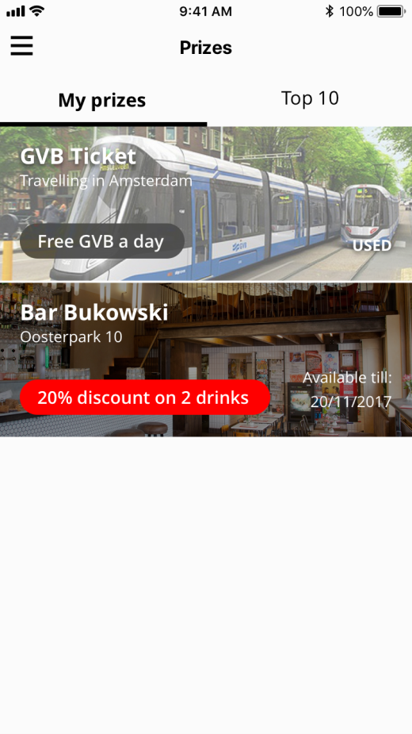

Amsterdam Discovery Challenge
App
2018
The Amsterdam Discovery Challenge app aims to reduce the tourist pressure in the city center. It was inspired by Hoes - a geocaching app where the user leads his way through the city by answering questions and playing games.
What I Did
- Created user flow;
- Redesigned the mobile app.
For Whom
DTT is a Dutch company based in Amsterdam; they stand for beautifully designed and viable solutions.
My Challenges
Showcase a workflow model to improve UI designers' task to create a workable app from scratch.
Prototype
I built a few prototypes in Framer to test the functionalities that I wanted to change, such as card animation, menu interaction, and tab navigation.
Results
A workflow app model that helps designers and clients to understand the process of developing a mobile app.
